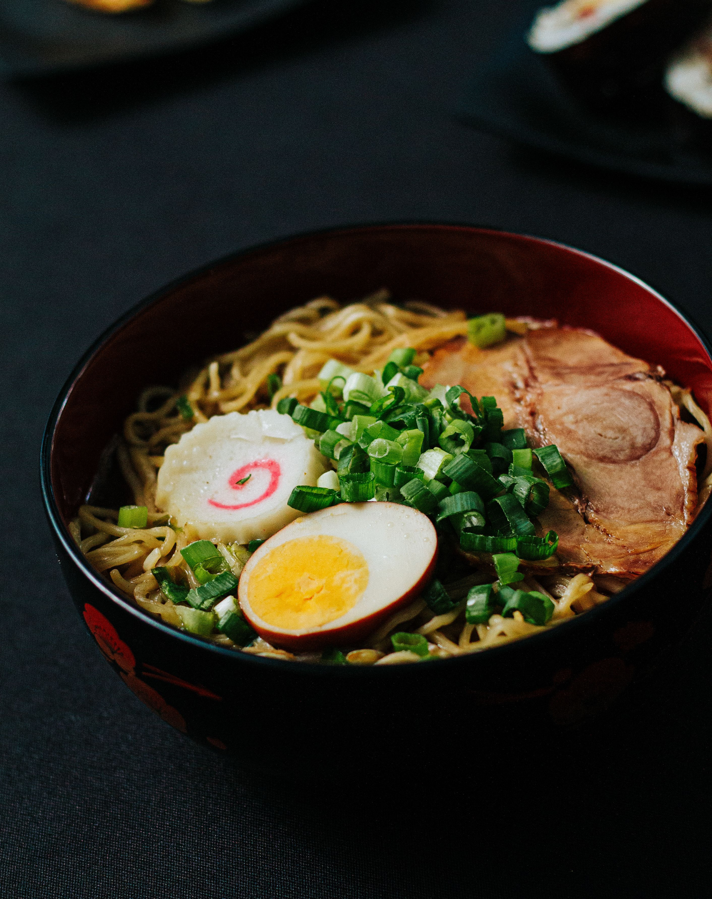

Ramen is a dish originated in Japan. Refered to as noodles by many.
The Ichiraku ramen is undoubtely one of the most famous ramen in the world
Being shown in the Big 5 anime: Naruto, it has a different fanbase, also while partly being Naruto Uzumaki's favourite 'MEAL' ever.